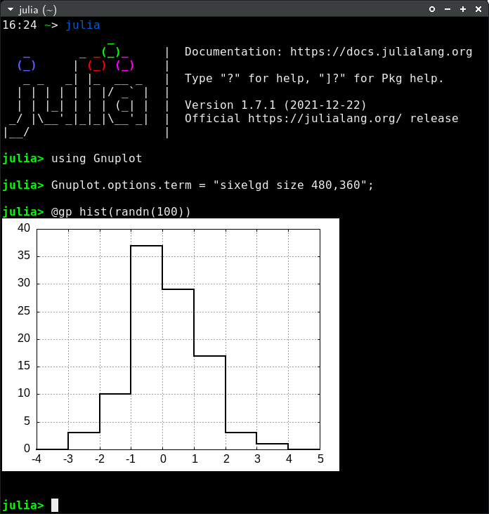
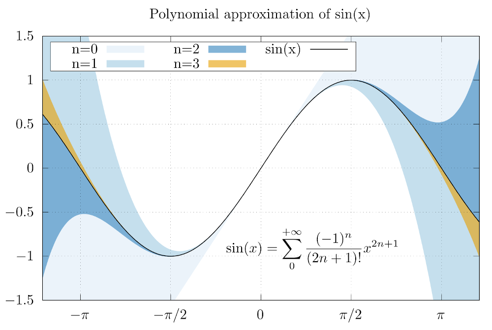

Gnuplot terminals
Gnuplot provides dozens of terminals to display plots or export them into files (see terminals() to get a list of enabled terminals on your platform). This section discuss a few tips on how to use the most common terminals.
To use a specific terminal for interactive use you may either set it as initialization command for all new session with (see Options):
Gnuplot.options.term = "wxt"See official gnuplot documentation for further info on terminals and their options.
Interactive terminals (wxt and qt)
The multiplatform wxt and qt terminals are among the most widely used ones for their nicely looking outputs on display and for their interactive capabilities.
You may use such terminals with:
Gnuplot.options.term = "wxt size 800,600"or
Gnuplot.options.term = "qt size 800,600"(the size 800,600 is optional and can be omitted).
Press the h key on the window to display an help message with all available keyboard shortcuts. In particular press 6 to enable printing plot coordinates on Julia stdout (ensure mouse is enabled with m).
Plot in a terminal application (dumb, sixel and sixelgd)
Gnuplot supports plotting in a terminal application, with no need for X11 or other GUI support, via the dumb, sixel and sixelgd terminals. These are extremely useful when you run Julia on a remote shell through ssh, with no X11 forwarding. The dumb terminal uses ASCII characters to draw a plot, while sixel and sixelgd actually use bitmaps (but require Sixel support to be enabled in the terminal, e.g. xterm -ti vt340).
Dumb terminal can be used as follows:
julia> origterm = Gnuplot.options.term;
julia> Gnuplot.options.term = "dumb size 60,15";
julia> @gp "plot sin(x)"
1 +-------------------------------------------------+
0.8 |-+ *+ * + ** ** + * * +-|
0.6 |-+ * ** * * sin(x) *******-|
0.4 |*+ * * * * * *+-|
0.2 |*+ * * * * * *-|
0 |*+ * * * * * *-|
| * * * * * * *|
-0.2 |-* * * * * * +*|
-0.4 |-+* * * * * * +*|
-0.6 |-+* * * * ** * +-|
-0.8 |-+ * * + ** ** + * * +-|
-1 +-------------------------------------------------+
-10 -5 0 5 10
julia> Gnuplot.options.term = origterm;
A sixel plot on xterm looks as follows: 
The above terminals are available if gnuplot has been compiled with the --with-bitmap-terminals option enabled and Libgd (only for sixelgd).
Export to image files
Gnuplot provides dozens of terminals able to export on files. Examples are:
pngcairoto export PNG files;pdfcairofor PDF;jpegfor JPG;giffor GIF (see Animations).
All the above terminals support the size and fontscale options to quickly adjust the size of the rasterized image and the size of the font respectively. E.g.:
save(term="pngcairo size 480,360 fontscale 0.8", output="output.png")(see also save()).
Gnuplot is also able to export vector (i.e. non-raster) plots through the svg terminal.
The cairolatex terminal
The cairolatex terminal allows to produce high quality plots by splitting the output into a PDF file (containing a rasterized image of a plot) and a .tex file (containing all the text as $\LaTeX$ code). The following example shows how to write plot tics and an equation in $\LaTeX$:
x = LinRange(-2pi, 2pi, 1000)
@gp tit="Polynomial approximation of sin(x)" "set style fill transparent solid 0.6 noborder"
@gp :- raw"""set xtics ('$-\pi$' -pi, '$-\pi/2$' -pi/2, 0, '$\pi/2$' pi/2, '$\pi$' pi)"""
@gp :- xr=3.8.*[-1, 1] yr=[-1.5,1.5] key="box opaque left horiz" linetypes(:Blues_3) "set grid front"
latex = raw"""\begin{minipage}[c]{\textwidth}\begin{equation*}""" *
raw"""\sin(x) = \sum_0^{+\infty} \frac{(-1)^n}{(2n + 1)!} x^{2n+1}""" *
raw"""\end{equation*} \end{minipage}"""
@gp :- "set label at graph 0.62,0.2 front center '$latex'"
approx = fill(0., length(x));
@gp :- x sin.(x) approx .+= x "w filledcurve t 'n=0' lt 1"
@gp :- x sin.(x) approx .+= -x.^3/6 "w filledcurve t 'n=1' lt 2"
@gp :- x sin.(x) approx .+= x.^5/120 "w filledcurve t 'n=2' lt 3"
@gp :- x sin.(x) approx .+= -x.^7/5040 "w filledcurve t 'n=3' lt 4"
@gp :- x sin.(x) "w l t 'sin(x)' lw 2 lc rgb 'black'"
save(term="cairolatex pdf input color dashed size 5in,3.3in", output="test.tex")If you add a path in the output= keyword this will also be copied in the the .tex file, and may generate errors when compiling $\LaTeX$ code. The simplest way to solve this problem is to use just filenames, with no paths.
The two output files (test.tex and test.pdf) can then be included in a $\LaTeX$ file as follows:
\documentclass{article}
\usepackage{amsmath}
\usepackage{graphicx}
\usepackage{color}
\begin{document}
\begin{figure}
\input{test.tex}
\end{figure}
\end{document}And the output is: 